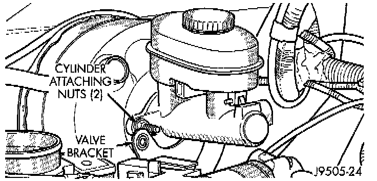

Master Cylinder Replacement
REMOVAL1. Remove brake lines from master cylinder.
2. Remove combination valve.

3. Remove nuts that attach master cylinder to booster studs. Retain nuts as they are special locking types.
4. Remove master cylinder from booster.
INSTALLATION
NOTE: Bleed new master cylinder on bench before installation.
1. Remove protective cover from end of primary piston.
2. Bleed master cylinder.
3. Slide master cylinder onto booster studs. Align booster push rod in cylinder primary piston and seat cylinder against booster.
4. Install master cylinder mounting nuts and tighten nuts to 18 Nm (155 inch lbs.). Use original or factory replacement nuts only.
5. Install combination valve and tighten mounting nuts to 18 Nm (155 inch lbs.).
6. Install brake lines that connect master cylinder to combination valve.
7. Fill and bleed brake system.
Brake Bleeding